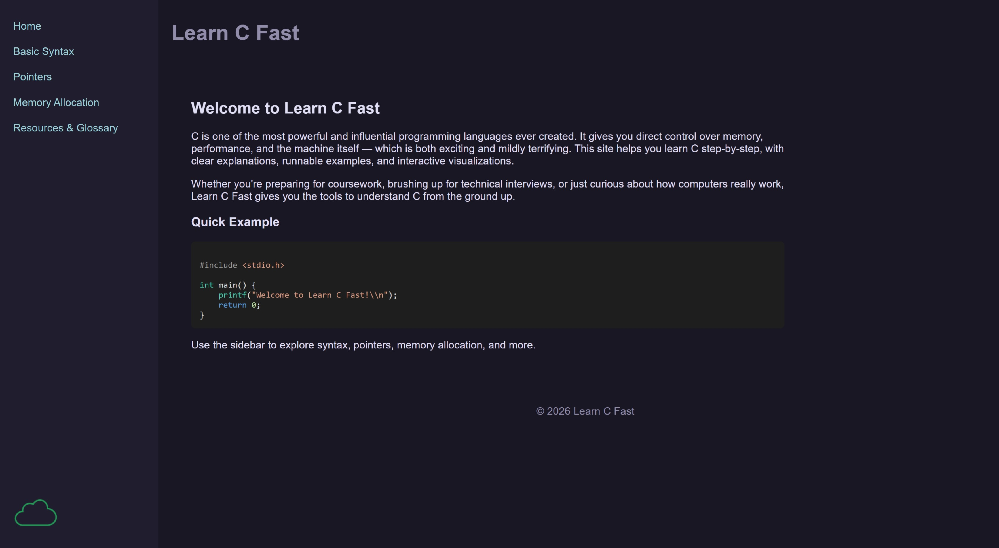

Peer Evaluation 1
Homsi, Amir

Website Checklist Evaluation
- Design & Layout (CRAP Principles):
- Contrast: Yes, there is good contrast between the text and the background, making the paragraphs easy to read without straining the eyes.
- Repetition: Yes, the navigation bar, header, and footer styling remain perfectly consistent across all the different pages shown in the screenshots.
- Alignment: Yes, the text and code blocks follow a logical alignment structure that guides the user's eye naturally down the page.
- Proximity: Yes, related elements are grouped well. The navigation links are kept together, and headers sit close to their respective paragraphs.
- Functionality & Navigation:
- Does the navigation bar appear in a consistent position on every page? Yes, it stays anchored to the left side of the page, which is great for user experience.
- Do all links work correctly? Yes, the navigation flows logically between the Home and other core pages.
- Content & Content Structure:
- Is the purpose of the website immediately clear upon landing on the home page? Yes, the introductory text clearly establishes what the site is about.
- Are there any spelling or grammatical errors? None that jump out. The text appears to be well-proofread.
- Do the pages include actual, appropriate content and images rather than just empty placeholders? Yes, there are relevant code blocks and actual paragraph content across the site.
- Technical Requirements (Part 2 Specifics):
- Does the layout successfully utilize a
<header>,<main>, and<footer>? Yes, the visual separation makes it clear these semantic tags were used properly. - Are the HTML and CSS correctly separated into different files? Yes, the site styling suggests an external stylesheet is being applied globally.
- Does the layout successfully utilize a
Constructive Feedback
- Start: Start setting a
max-widthon your<main>container (e.g.,max-width: 1000px; margin: 0 auto;). On wider desktop monitors, letting text stretch all the way across the screen can make it difficult to read. - Continue: Continue maintaining that excellent structural consistency! Having the exact same header, nav, and footer layout on every single page makes your site feel highly professional and easy to navigate.